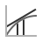

This is documentation for Orange 2.7. For the latest documentation, see Orange 3.
Pade¶
Replaces a continuous class with a derivative or a MQC by one or more continuous attributes.
Signals¶
- Inputs:
- Classified Examples (ExampleTableWithClass)
Input data set.
- Outputs:
- Classified Examples (ExampleTableWithClass)
Output data set.
Description¶
This widget implements several techniques for assessing partial derivatives of the class variable for the given set of examples. The derivative is appended to the example table as a new class attribute. The widget can compute either quantitative derivative by a chosen continuous attribute or a qualitative derivative by one or more attributes.
The widget is implemented to cache some data. After, for instance, computing the derivatives by x and y separately, the widget has already stored all the data to produce the derivatives by both in a moment.
The Attributes box lists all continuous attributes and lets the user select the attribute by which she wants to compute the qualitative derivative. The selection is important only when the widget actually outputs a qualitative derivative (this depends on other settings, described below). Buttons All and None select the entire list and nothing.
Derivatives by more than one attribute are mathematically questionable, and computing by many attributes can be slow and messy. Methods that are based on triangulation will include all attributes in the triangulation, regardless of the selection, but then compute only the selected derivatives.
Box Method determines the used method and its settings. Available methods are First triangle, Star Regression, Univariate Star Regression and Tube Regression. First triangle is unsuitable for data with non-negligible noise. Star regression seems to perform rather poor; the quantitative derivatives it computes are even theoretically wrong. Univariate Star Regression will handle noise well, but also work well for very complex functions (like sin(x)sin(y) across several periods). Tube regression is very noise resistant, which can lead it to oversimplify the model, yet it is the only method that does not use the triangulation and is thus capable of handling discrete attributes, unknown values and large number of dimensions. It may be slow when the number of examples is very large. Detailed description of these methods can be found in Zabkar and Demsar’s papers.
Ignore differences below lets the user set a threshold for qualitative derivatives.
The widget can also put some data in meta attributes: the Qualitative constraint, as described above, Derivatives of selected attributes and the Original class attribute.
The changes take effect and the widget start processing when Apply is hit.